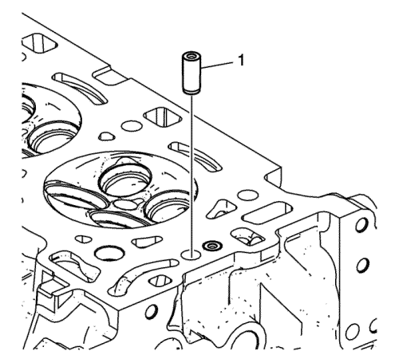
- Utilice el lubricante incluido con la herramienta de extracción/montaje EN 46122 para lubricar el exterior de la nueva válvula reguladora (1).
- Con el extremo esférico de regulación de la válvula reguladora mirando hacia ARRIBA, en la parte contraria de la culata, inserte la NUEVA válvula reguladora en el orificio para la válvula reguladora de la culata.
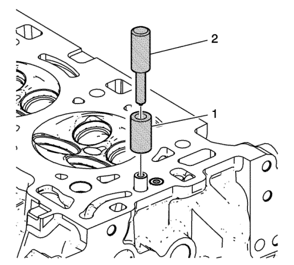
- Coloque el collarín EN 46122-2 (1) sobre la nueva válvula reguladora con el diámetro inferior ligeramente más grande del collarín mirando hacia abajo sobre la culata.
- Utilizando el arrastrador EN 46122-1 (2), golpee ligeramente la nueva válvula reguladora hasta colocarla en su posición y hasta que el arrastrador se detenga contra la parte superior del collarín.
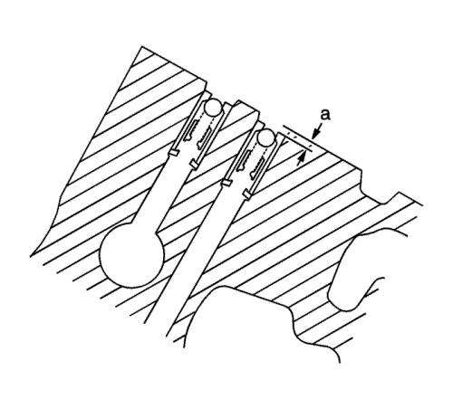
- Compruebe que las válvulas de comprobación de la alimentación de aceite del actuador de posición de los árboles de levas están montadas correctamente en la culata. La válvula de comprobación de la alimentación de aceite del actuador de posición de árbol de levas debería estar dispuesta 2 mm (0,0787 pulg.) por debajo de la superficie de la culata (a).
Precaución: Consulte Precaución con las fijaciones en la sección Prólogo
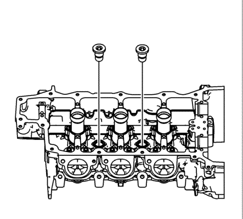
- Coloque los tapones roscados de refrigerante de la culata y apriételos a 31 N·m (23 lib. pie).
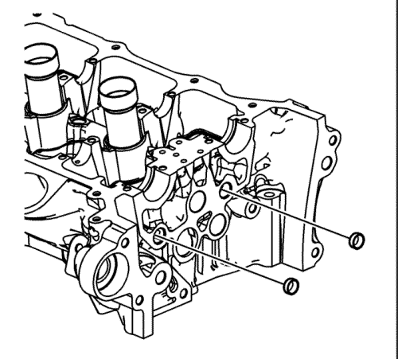
- Coloque los NUEVOS tapones de expansión de la galería de aceite de la culata.
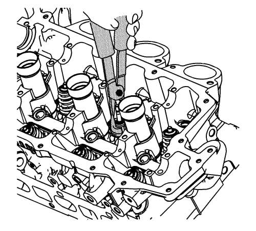
- Coloque los retenes de aceite del vástago de válvula sobre las guías.
Nota: No reutilice NUNCA un retén de aceite de vástago de válvula. Use siempre retenes nuevos al montar la culata.
- Monte un nuevo retén de aceite en el vástago de la válvula con la herramienta de extracción/montaje EN 46116.
Nota: Durante el montaje, sólo debe aplicarse fuerza a la zona de contacto del muelle de válvula del nuevo retén de aceite del vástago.
- Use la herramienta de extracción/montaje EN 46116 para empujar y girar en su sitio el retén de aceite del vástago sobre la guía de válvula hasta que el retén quede bien bloqueado en la misma.
- Lubrique el vástago y la guía de la válvula con aceite de motor limpio. Consulte Adhesivos, líquidos, lubricantes y selladores para el lubricante recomendado.

Nota: Al montarse la válvula, el retén de aceite del vástago no debe soltarse de la guía de válvula.
- Introduzca la válvula en la guía hasta que descanse sobre el asiento de válvula.
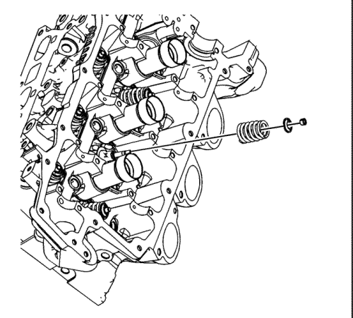
- Coloque el muelle de válvula en el asiento del muelle.
- Coloque el seguro del muelle de válvula.
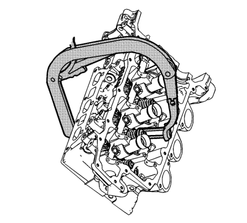
Advertencia : Los muelles de la válvula comprimida tienen una gran tensión contra el compresor del muelle de la válvula. Los muelles de la válvula que no estén comprimidos o liberados correctamente por el compresor del muelle de la válvula se pueden expulsar del compresor aplicando mucha fuerza. Tenga cuidado al comprimir o soltar el muelle de la válvula con el compresor del muelle de la válvula y al desmontar o montar las llaves del vástago de válvula. Si no se tiene cuidado, se podrán producir lesiones físicas.
Atención: No comprima los muelles de válvula a menos de 24,0 mm (0,943 pulg.) El contacto entre el seguro del muelle de válvula y el retén de aceite del vástago de válvula puede provocar daños potenciales en el retén.
- Comprima el muelle de válvula usando el compresor EN 8062 y el adaptador EN 46119.
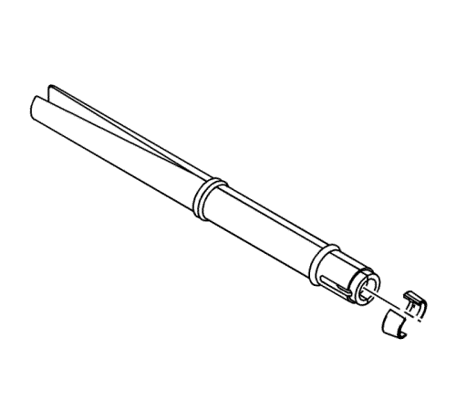
Nota: Asegúrese de que las chavetas de válvula se colocan en la dirección correcta en la herramienta de extracción/montaje EN 46117. Las chavetas de válvula deben montarse con el extremo cónico mirando hacia el retén del vástago.
- Con el muelle comprimido, monte las chavetas de válvula en la herramienta de extracción/montaje EN 46117.
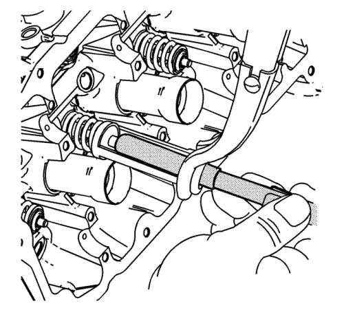
- Coloque las chavetas en su posición presionando la herramienta hacia abajo. Mientras sujeta la herramienta en la zona entre las juntas tóricas, utilizando el pulgar y el índice, libere la tensión del adaptador EN-46119 y del compresor EN 8062. Esto presionará la herramienta de extracción/montaje EN-46117 fuera del vástago de la válvula, dejando las chavetas en su posición.
- Coloque un trapo en la punta de la válvula y golpee ligeramente con un martillo de goma para asegurarse de que las chavetas de válvula están bien montadas.
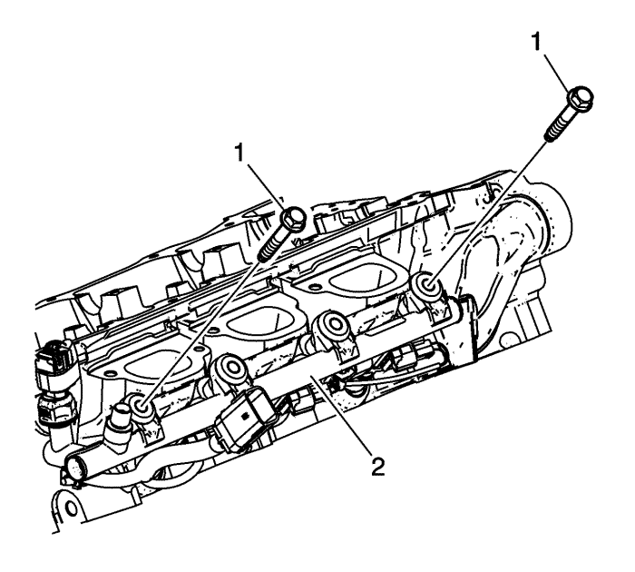
- Monte de manera uniforme en la culata el tubo de distribución del combustible con sus inyectores (2).
- Coloque y apriete con la mano los 2 pernos (1) del tubo de distribución de combustible exterior para asentar los inyectores en sus orificios.
- Coloque y apriete a mano los dos pernos del tubo de distribución de combustible.
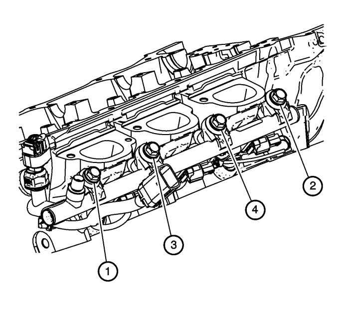
- Apriete los tornillos del tubo de distribución del combustible en la secuencia mostrada a 25 N·m (18 lib. pulg.).